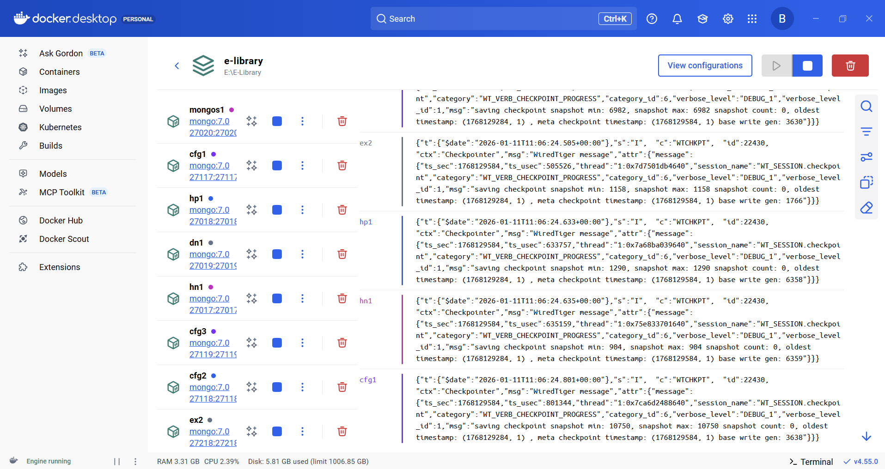
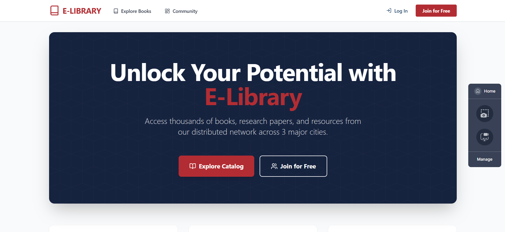
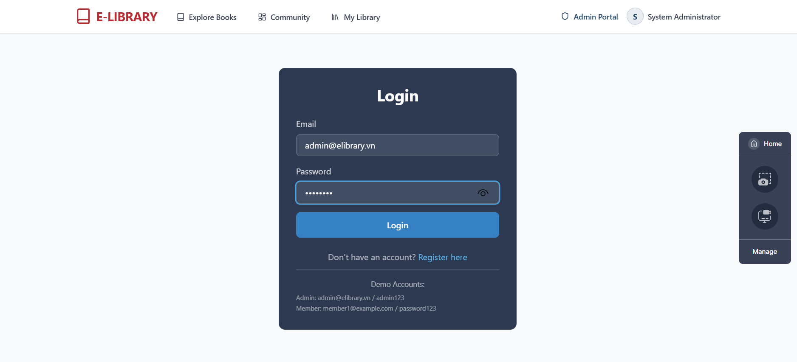
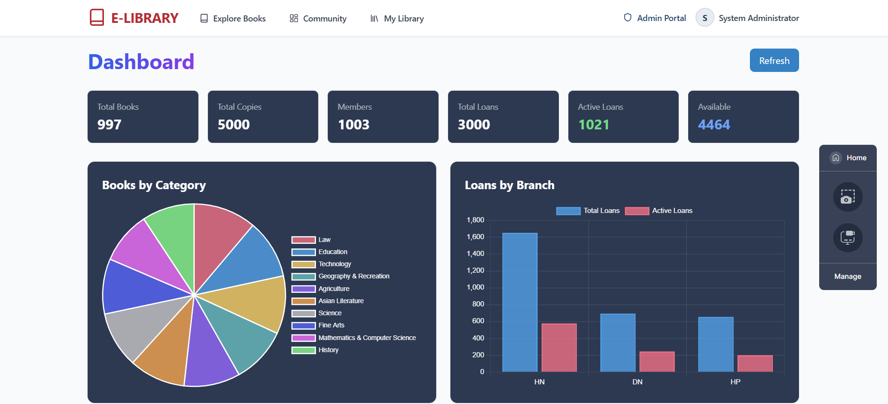
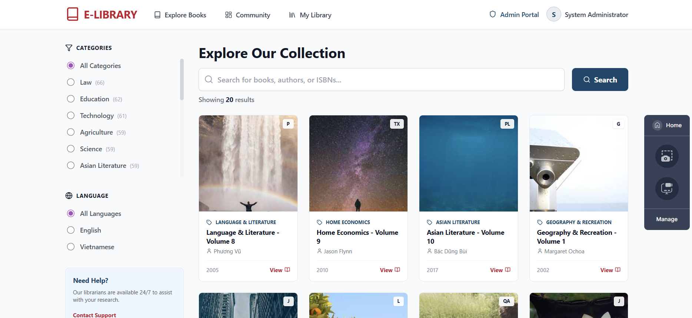
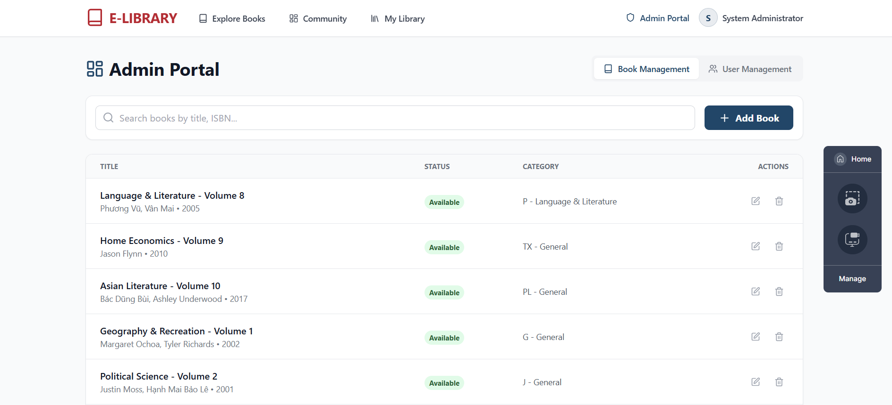

E-Library là hệ thống quản lý thư viện điện tử phân tán được thiết kế để phục vụ 3 chi nhánh tại các thành phố lớn của Việt Nam: Hà Nội, Hải Phòng, và Đà Nẵng. Hệ thống được xây dựng dựa trên kiến trúc MongoDB Sharded Cluster với khả năng mở rộng cao (horizontal scaling) và đảm bảo tính sẵn sàng (high availability).
Hệ thống được thiết kế để giải quyết bài toán quản lý thư viện quy mô lớn với các yêu cầu phi chức năng khắt khe:
Hệ thống bao gồm các phân hệ chức năng chính sau:
Cho phép thủ thư quản lý danh mục sách, nhập sách mới, cập nhật thông tin và quản lý các bản sao (copies) vật lý. Hỗ trợ phân loại sách theo chuẩn LCC (Library of Congress Classification).
Xử lý quy trình mượn sách, gia hạn và trả sách. Hệ thống tự động kiểm tra các ràng buộc nghiệp vụ như: giới hạn số sách được mượn theo hạng thành viên (Basic/VIP), kiểm tra sách quá hạn và tính phí phạt.
Cung cấp công cụ tìm kiếm mạnh mẽ (Full-text Search) cho phép độc giả tìm sách theo tiêu đề, tác giả, ISBN hoặc nội dung tóm tắt. Kết quả tìm kiếm được xếp hạng theo độ phù hợp (relevance score).
Cung cấp các biểu đồ trực quan về tình hình hoạt động của thư viện: Thống kê số lượng sách mượn theo thời gian, Top sách được yêu thích, Phân bố sách theo thể loại...
Hình 2.1: Sơ đồ thực thể liên kết (ERD) mô tả mối quan hệ giữa Books, Copies, Members và các giao dịch.
Sơ đồ ERD mô tả 5 collections chính và mối quan hệ reference giữa chúng.
barcode (Hashed) - Phân tán đều dữ liệu ghi trên các shards.branchId (Ranged) - Tối ưu truy vấn theo địa lý (data locality).title và authors - Tìm kiếm full-text nhanh chóng.Hình 3.1: Kiến trúc công nghệ (Tech Stack) bao gồm Frontend Next.js, Backend FastAPI và MongoDB Cluster.
| Layer | Technology | Version | Vai trò |
|---|---|---|---|
| Frontend | Next.js | 14.0 | React framework |
| TypeScript | 5.x | Type safety | |
| Backend | FastAPI | 0.104 | Async API framework |
| Motor | 3.3 | Async MongoDB driver | |
| Database | MongoDB | 7.0 | NoSQL Database |
| Docker | 24.x | Containerization |
Hình 3.4: Giao diện quản trị MongoDB Compass

Hình 3.3: Giao diện quản lý Cluster trực quan trên MongoDB Compass.
Giao diện trực quan cho phép theo dõi trạng thái Cluster, Shards và quản lý Data Collections.
Hình 3.1: Docker Containers đang chạy

Hình 3.2: Hệ thống 9 Containers (Shards, Configs, Router) hoạt động trên Docker Desktop.
MongoDB Compass kết nối đến Sharded Cluster qua mongos1:27020, hiển thị database elibrary với các collections đã được shard.
Hình 3.4: Sơ đồ triển khai hạ tầng 3-Tier với Mongos Router điều phối truy vấn.
| Thành phần | Vai trò | Số lượng Node |
|---|---|---|
| mongos | Router | 1 |
| rsCity (Shard 1) | Lưu trữ chính | 3 (HN, HP, DN) |
| rsExtra (Shard 2) | Mở rộng | 2 |
| cfgRS | Config Servers | 3 |
Hình 3.5: Luồng xử lý ghi (Write Operation) - Mongos định tuyến dữ liệu dựa trên Shard Key.
Hình 3.6: Luồng xử lý đọc có mục tiêu (Targeted Read) - Truy vấn đi trực tiếp đến Shard chứa dữ liệu.
Hình 3.7: Luồng xử lý đọc Broadcast (Scatter-Gather) - Truy vấn phải quét trên tất cả Shards.
Insert (Mượn sách):
db.loans.insertOne({
branchId: "HN",
memberId: "MB001",
copyId: "CP001",
borrowedAt: new Date(),
dueAt: new Date(Date.now() + 14*24*3600*1000)
})Text Search:
db.books.find(
{$text: {$search: "distributed system"}},
{score: {$meta: "textScore"}}
).sort({score: {$meta: "textScore"}})Aggregation:
db.loans.aggregate([
{$group: {_id: "$branchId", total: {$sum: 1}}},
{$sort: {total: -1}}
])Update (Gia hạn sách):
db.loans.updateOne(
{ _id: "LN00001", status: "active" },
{
$set: { dueAt: new Date(new Date().getTime() + 7*24*3600*1000) },
$inc: { renewCount: 1 }
}
)Map-Reduce (Thống kê sách theo LCC):
db.books.mapReduce(
function() { emit(this.lccCode, 1); },
function(key, values) { return Array.sum(values); },
{ out: "book_counts_by_lcc" }
)API Call (Ví dụ HTTP Request):
POST /api/v1/loans/borrow
Content-Type: application/json
Authorization: Bearer
{
"bookId": "BK001",
"branchId": "HN",
"copyId": "CP005"
} Hình 4.1: Biểu đồ tuần tự (Sequence Diagram) quy trình Mượn sách, kiểm tra tồn kho và giới hạn mượn.
Hình 4.2: Biểu đồ tuần tự quy trình Trả sách và cập nhật trạng thái bản copy.

Hình 5.1: Quy trình tự động chịu lỗi (Failover) - Bầu chọn Primary mới khi Node hiện tại gặp sự cố.
Kết quả: Khi Node PRIMARY (HN) bị crash, hệ thống tự động bầu chọn Node mới trong vòng < 15 giây. Zero data loss.

Hình 5.2: Giao diện Trang chủ với thiết kế Responsive.

Hình 5.3: Giao diện Đăng nhập với xác thực JWT.

Hình 5.4: Dashboard thống kê trực quan sử dụng Chart.js.

Hình 5.5: Giao diện Quản lý danh mục sách.

Hình 5.6: Trang quản trị dành cho Admin (RBAC).
| Hạn chế | Nguyên nhân | Giải pháp đề xuất |
|---|---|---|
| Chưa có Rate Limiting | Thiếu middleware kiểm soát tần suất request | Tích hợp Redis để giới hạn request/IP (ví dụ 100 req/min). |
| Backup thủ công | Chưa thiết lập Cron job sao lưu | Xây dựng quy trình Automated Snapshot hàng ngày lên Cloud Storage (S3). |
| Search chưa thông minh | Mới chỉ dùng Text Search cơ bản | Nâng cấp lên Atlas Search (Lucene) hoặc Elasticsearch để hỗ trợ Fuzzy matching tốt hơn. |